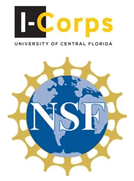
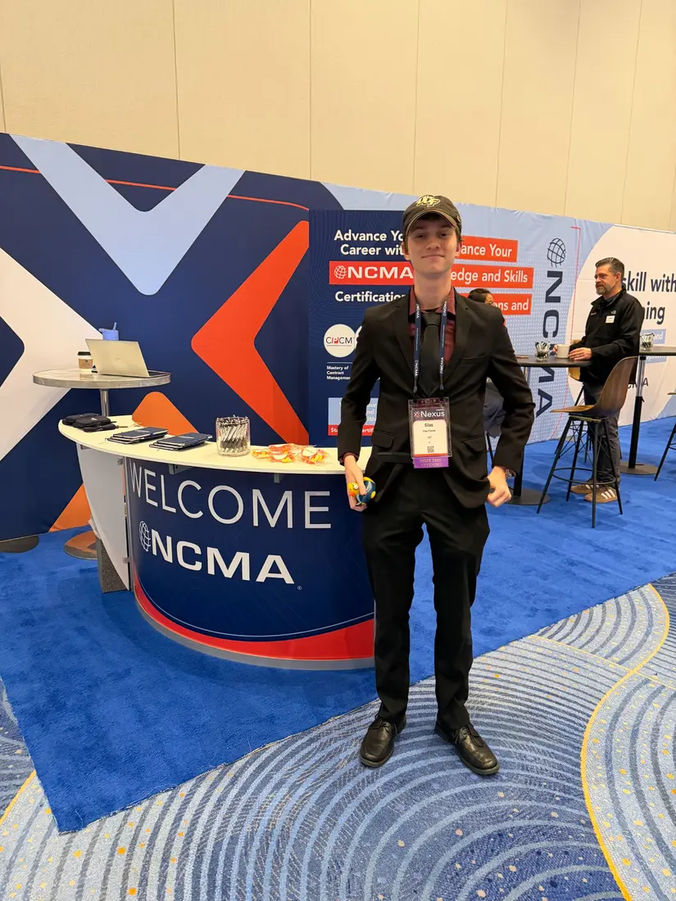
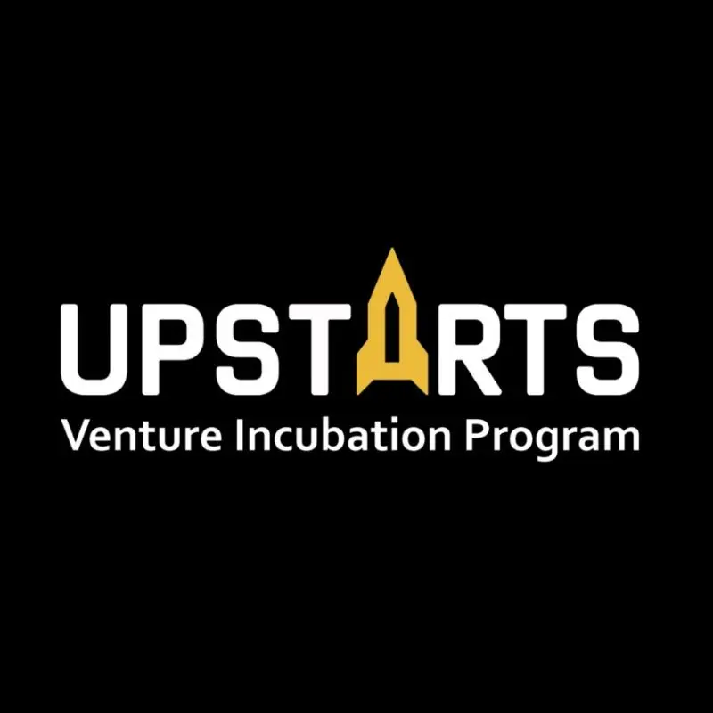

2025 / Participant
UCF I-Corps
Completed NSF I-Corps customer discovery through UCF, including more than 50 interviews used to test the initial market direction.
Founded in Orlando in 2025, Underseer builds sensing hardware and software for infrastructure and security work.
Underseer is focused on distributed, low-power systems that detect ground activity and help operators direct the equipment they already use.

Silas founded Underseer while studying mechanical engineering at the University of Central Florida. His work focuses on low-power sensing hardware and infrastructure monitoring.
Mission Give infrastructure operators a clearer picture of activity beyond conventional monitoring coverage.

Completed NSF I-Corps customer discovery through UCF, including more than 50 interviews used to test the initial market direction.

Selected for the UCF UpStarts Venture Incubation Program while developing Underseer’s early company and product foundations.
Program names and marks belong to their respective institutions. Participation does not imply endorsement.
For product, pilot, research, or company inquiries, contact Underseer directly.